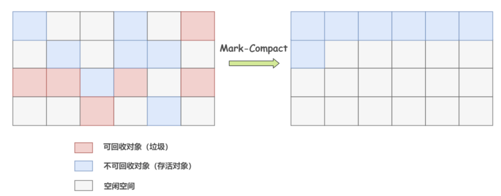

垃圾回收机制
可达性分析

GC-Root
- 虚拟机栈中的引用（方法的参数，局部变量等）
- 本地方法栈中JNI的引用
- 类静态变量
- 运行时常量池的常量
STW(Stop The World)
在垃圾收集过程中，JVM 会暂停所有的用户线程，这种暂停被称为"Stop The World"事件
垃圾搜集算法
标记清除算法

复制算法

标记整理算法

分代收集算法

GC主要场景
默认空间比例为 8:1:1(Eden区:Survivor 0区:Survivor 1区); 2:1(Eden区+Survivor区: Old区)
常见流程
第一次：
Eden 区满 → 触发 Minor GC（扫描 Eden 区 + 初始 From 区 S0，S0 为空）→ 存活对象进入当前 To 区 S1（年龄+1）
第二次：
Eden 区满 → 触发 Minor GC（扫描 Eden 区 + 当前 From 区 S1）→ 存活对象进入当前 To 区 S0（年龄+1）
第三次：
Eden 区满 → 触发 Minor GC（扫描 Eden 区 + 当前 From 区 S0）→ 存活对象进入当前 To 区 S1（年龄+1）
...
第 15 次：
Eden 区满 → 触发 Minor GC（扫描 Eden 区 + 对应 From 区）→ 对象年龄达到 15 → 直接晋升 Old 区
- 若某次 Minor GC 后，Survivor To 区放不下所有存活对象（Eden + From 区的存活对象过多），部分对象会「提前晋升老年代」（无需等到 15 次）；
- 年龄阈值可通过 -XX:MaxTenuringThreshold 调整（不一定是 15，如调整为 10 则 10 次后晋升）
大对象
1. 大对象创建 → 优先尝试分配到Eden区
├─ 能放下 → 分配成功，流程结束
└─ 放不下 → 进入步骤2
2. 尝试分配到「当前空闲的Survivor To区」（可能是S0或S1，非固定）
├─ 能放下 → 分配成功，流程结束
└─ 放不下 → 触发Minor GC（步骤3）
3. 执行Minor GC → 回收Eden区+当前From区的不可达对象
4. Minor GC后，重新尝试分配（先Eden，后To区）
├─ 能放下（Eden或To区） → 分配成功，流程结束
└─ 仍放不下 → 大对象需晋升老年代（步骤5）
5. 检查老年代剩余连续空间
├─ 能放下 → 晋升老年代，分配成功，流程结束
└─ 放不下 → 触发Major GC/Full GC（步骤6）
6. 执行Major GC/Full GC → 回收老年代+新生代的不可达对象
7. 再次检查老年代剩余空间
├─ 能放下 → 大对象分配到Old区，流程结束
└─ 仍放不下 → 抛出 OutOfMemoryError: Java heap space（OOM）
大对象超过PretenureSizeThreshold
1. 大对象创建 → 直接尝试分配到老年代
├─ 能放下 → 分配成功
└─ 放不下 → 触发Major GC/Full GC
2. GC后再次检查老年代空间
├─ 能放下 → 分配成功
└─ 放不下 → OOM
动态对象年龄判定（JVM 优化：提前晋升的"隐藏规则"）
触发条件：Minor GC 后，Survivor 区中「同一年龄的对象总大小」≥ Survivor 区总容量的 50%
流程：
1. 示例：Survivor 区总大小 20MB，年龄为 3 的对象总大小达到 10MB（≥50%）
2. JVM 直接将「年龄 ≥3 的所有对象」提前晋升到老年代（无需等到默认的 15 次）
核心说明：
- JVM 自适应优化策略，避免 Survivor 区被"同一年龄段大量对象"占满，导致后续对象无法复制
- 优先级高于 MaxTenuringThreshold 阈值，即使阈值设为 15，满足条件也会提前晋升
空间分配担保（晋升前的"安全检查"）
触发条件：Minor GC 前，JVM 执行「空间分配担保」检查（参数 -XX:+HandlePromotionFailure 开启，JDK8+ 默认）：
- 检查「老年代最大可用连续空间」是否 ≥「新生代历次晋升到老年代的对象平均大小」
- 不满足则判定为"担保失败"（认为 GC 后仍可能无法容纳晋升对象）
流程：
1. 虚拟机先检查老年代最大可用连续空间是否大于新生代所有对象总空间
- 如果大于，Minor GC 可以确保是安全的
- 如果不大于，继续下一步检查
2. 检查老年代最大可用连续空间是否大于历次晋升到老年代对象的平均大小
- 如果大于，尝试进行一次 Minor GC（有风险）
- 如果小于，或 HandlePromotionFailure 不允许冒险，则改为进行 Full GC
3. 担保失败 → 直接触发「Full GC」（而非先执行 Minor GC）
4. Full GC 回收老年代+新生代空间后，再执行 Minor GC，后续按正常逻辑分配/晋升
核心说明：
- 避免"Minor GC 后大量对象晋升，老年代仍放不下"导致的二次 Full GC，减少性能抖动
- 关闭 HandlePromotionFailure（不推荐）会直接抛出 OOM（JDK7 及以前默认关闭，后续已废弃该关闭逻辑）
数组大对象的特殊分配逻辑
触发条件：创建「大数组对象」（如 new byte[100MB]），数组元素无外部强引用，但本身占用大量连续内存
特殊点：
- 未超过 PretenureSizeThreshold 时本应进入新生代，但数组需连续内存，若 Eden 区剩余空间碎片化（即使总和够），仍判定为"放不下"
- 直接触发 Minor GC，GC 后仍无法在新生代分配则晋升老年代
核心说明：
- 数组对象对"连续内存"要求更高（通常体积更大，更易因碎片导致分配失败）
- 老年代的标记-整理算法保证连续空间，因此大数组最终更易在老年代分配
Minor GC 时"晋升总大小"超过老年代剩余空间
触发条件：Minor GC 后，Eden+From 区的存活对象总大小（需晋升到老年代的部分）＞ 老年代剩余连续空间
流程：
1. 直接触发「Full GC」（而非先晋升再判断）
2. Full GC 回收老年代空间后，重新尝试晋升
3. 仍不足 → OOM
核心说明：
- 区别于"单个大对象晋升"：该场景是「批量存活对象晋升」（如业务高峰期大量短期对象未回收）
- 是"Minor GC 频繁触发 Full GC"的核心诱因之一，需优化代码减少长期存活对象或调大老年代
软引用对象触发的 Minor GC
触发条件：软引用关联的对象（非强引用），当「新生代内存不足」（Eden 区即将满）时
流程：
1. 软引用对象默认存于新生代，Eden 区满前，JVM 优先回收「仅被软引用关联的对象」
2. 回收后 Eden 区仍不足 → 触发 Minor GC
核心说明：
- 软引用"内存不足时回收"特性仅针对新生代对象，老年代软引用需等到老年代内存不足时回收
- 常用于缓存场景（图片缓存），避免缓存占用过多新生代内存导致频繁 Minor GC
Full GC 触发条件
- System.gc() 调用：此方法建议 JVM 进行 Full GC，虽然不一定立即执行，但大多数情况下会触发
- 业务代码调用
System.gc()（JVM 仅作"建议"，不保证执行） - 多数 JVM 实现会触发「Full GC」（回收新生代+老年代）
- 开启
-XX:+DisableExplicitGC（推荐生产环境开启）则忽略该调用，不触发 GC -
注意：不建议业务代码调用，破坏 JVM 自动 GC 策略，导致 Full GC 频繁、性能抖动
-
老年代空间不足：当老年代空间不足以容纳新晋升的对象或大对象时
-
方法区（PermGen/Metaspace）空间不足：
- 元空间（JDK8+ 替代永久代）存储类元数据（Class 对象、方法信息等）
- 加载大量类（如 Spring Boot 应用、动态代理类）导致元空间满
- 手动设置
-XX:MaxMetaspaceSize后达到阈值（默认无上限，依赖物理内存） - 元空间不足 → 触发 Full GC（唯一能回收元空间的 GC 类型）
- 回收"无用的类元数据"（类加载器被回收、无对象引用的 Class）
-
回收后元空间仍不足 → 抛出
OutOfMemoryError: Metaspace -
Minor GC 晋升失败：通过分配担保机制判断老年代空间不足以应对 Minor GC 的晋升
-
CMS Concurrent Mode Failure：CMS 垃圾回收期间，用户线程产生的新垃圾（浮动垃圾）导致老年代满，或者老年代碎片过多无法分配大对象
引用类型
Java 提供了四种引用类型，对 GC 的影响不同：
- 强引用 (Strong Reference)
- 最常见的引用，如
Object obj = new Object() -
只要强引用存在，垃圾收集器永远不会回收掉被引用的对象
-
软引用 (Soft Reference)
- 用
SoftReference类实现 - 在系统将要发生内存溢出异常之前，会将这些对象列进回收范围进行第二次回收。如果这次回收还没有足够的内存，才会抛出内存溢出异常
- 适合做缓存
-
触发条件：新生代内存不足时，JVM 优先回收「仅被软引用关联的对象」
-
弱引用 (Weak Reference)
- 用
WeakReference类实现 - 被弱引用关联的对象只能生存到下一次垃圾收集发生之前。当垃圾收集器工作时，无论当前内存是否足够，都会回收掉只被弱引用关联的对象
- 适合做缓存（如 WeakHashMap）
-
触发条件：无论内存是否充足，只要触发 GC（Minor/Full），就回收仅被弱引用关联的对象
-
虚引用 (Phantom Reference)
- 用
PhantomReference类实现 - 一个对象是否有虚引用的存在，完全不会对其生存时间构成影响，也无法通过虚引用来取得一个对象实例
- 为一个对象设置虚引用关联的唯一目的就是能在这个对象被收集器回收时收到一个系统通知（用于直接内存回收等）
- 适用场景：监控对象回收时机（释放 native 资源），不影响 GC 触发，但会被 GC 主动处理，必须配合「引用队列（ReferenceQueue）」
方法区回收
方法区（Java 8 后的 Metaspace）主要回收两部分内容：
-
废弃的常量：没有任何地方引用该常量
-
无用的类（需同时满足以下三个条件）：
- 该类所有的实例都已经被回收
- 加载该类的 ClassLoader 已经被回收
- 该类对应的 java.lang.Class 对象没有在任何地方被引用，无法在任何地方通过反射访问该类的方法
核心说明：
- 方法区回收条件苛刻，主要针对动态类加载场景（如动态代理、反射、热部署）
- 间接影响堆内存：Full GC 同时回收堆内对象，可能导致大对象提前晋升或回收
- 动态类加载场景需重点关注，易因忽略元空间导致内存泄漏
垃圾收集器简介
Serial 收集器
- 单线程收集器，进行垃圾收集时必须暂停其他所有工作线程（STW）。
- 简单高效，适合 Client 模式。
Parallel Scavenge 收集器
- 新生代收集器，使用复制算法，并行的多线程收集器。
- 目标是达到一个可控制的吞吐量（Throughput = 运行用户代码时间 / (运行用户代码时间 + 垃圾收集时间)）。
CMS (Concurrent Mark Sweep) 收集器
- 老年代收集器，基于标记-清除算法。
- 以获取最短回收停顿时间为目标，适合互联网站点。
- 缺点：对 CPU 资源敏感、无法处理浮动垃圾、产生内存碎片。
G1 (Garbage-First) 收集器
- 面向服务端应用，将堆划分为多个大小相等的 Region
- 能预测停顿时间，避免全堆扫描
- 整体看是基于标记-整理算法，局部看是基于复制算法，不会产生内存碎片
- 特殊分配规则：
- 无固定 Eden/Survivor/Old 区边界（按 Region 划分，Region 可动态切换角色）
- 大对象（超过 Region 大小 50%）直接分配到「大对象 Region」（属于老年代），无需经过新生代
- Minor GC 为"年轻代 Region 回收"，Full GC 为"混合回收"（年轻代+部分老年代 Region）
ZGC (Z Garbage Collector)
- JDK 11 引入，可伸缩的低延迟垃圾收集器
- 目标是将停顿时间控制在 10ms 以内，且不随堆大小增加而增加
- 基于读屏障、染色指针和内存多重映射等技术
- 特殊分配规则：
- 全堆无分代（或弱化分代），大对象直接分配到堆中，GC 时通过"并发移动"回收，无需提前晋升
- 无 Minor/Major GC 区分，统一为"GC 周期"，避免长时间停顿
跨代引用与卡表机制
触发背景：老年代对象可能引用新生代对象（如老年代静态变量引用新生代对象），Minor GC 需确认老年代是否有引用指向新生代存活对象
特殊处理：
- JVM 通过「卡表（Card Table）」标记老年代中"可能有跨代引用"的内存块
- Minor GC 时仅扫描卡表标记的块，而非全量老年代，提升扫描效率
核心说明：
- 不影响对象分配/晋升流程，但优化 Minor GC 执行效率
- JVM 底层默认开启，无需手动配置
参数配置说明
堆内存配置
| 参数 | 说明 | 示例 |
|---|---|---|
-Xms |
初始堆大小 | -Xms2g 设置初始堆为2GB |
-Xmx |
最大堆大小 | -Xmx4g 设置最大堆为4GB |
-Xmn |
新生代大小 | -Xmn1g 设置新生代为1GB |
-XX:NewRatio |
老年代/新生代比例 | -XX:NewRatio=2 老年代是新生代的2倍 |
-XX:SurvivorRatio |
Eden/Survivor比例 | -XX:SurvivorRatio=8 Eden是单个Survivor的8倍（默认8:1:1） |
推荐配置：
- 生产环境建议 -Xms 和 -Xmx 设置相同值，避免运行时动态扩容导致性能抖动
- 堆内存通常设置为物理内存的 60%-80%
对象晋升配置
| 参数 | 说明 | 示例 |
|---|---|---|
-XX:MaxTenuringThreshold |
对象晋升老年代的年龄阈值 | -XX:MaxTenuringThreshold=15 默认15次 |
-XX:PretenureSizeThreshold |
大对象直接进入老年代的阈值 | -XX:PretenureSizeThreshold=1048576 超过1MB直接进老年代 |
-XX:TargetSurvivorRatio |
Survivor区目标使用率 | -XX:TargetSurvivorRatio=50 默认50% |
注意事项：
- PretenureSizeThreshold 仅对 Serial 和 ParNew 收集器有效
- 动态年龄判定会覆盖 MaxTenuringThreshold 设置
垃圾收集器选择
| 参数 | 说明 |
|---|---|
-XX:+UseSerialGC |
使用Serial + Serial Old组合（单线程） |
-XX:+UseParallelGC |
使用Parallel Scavenge + Parallel Old组合（多线程，吞吐量优先） |
-XX:+UseConcMarkSweepGC |
使用ParNew + CMS + Serial Old组合（低延迟优先） |
-XX:+UseG1GC |
使用G1收集器（JDK9+默认） |
-XX:+UseZGC |
使用ZGC收集器（JDK11+） |
-XX:+UseShenandoahGC |
使用Shenandoah收集器（JDK12+） |
垃圾收集行为调优
| 参数 | 说明 | 示例 |
|---|---|---|
-XX:+DisableExplicitGC |
禁用System.gc()调用 | 生产环境推荐开启 |
-XX:ParallelGCThreads |
并行GC线程数 | -XX:ParallelGCThreads=4 |
-XX:ConcGCThreads |
并发GC线程数（CMS/G1） | -XX:ConcGCThreads=2 |
-XX:MaxGCPauseMillis |
最大GC停顿时间目标 | -XX:MaxGCPauseMillis=200 目标200ms |
-XX:GCTimeRatio |
GC时间占比 | -XX:GCTimeRatio=99 GC时间不超过1% |
CMS 收集器特定参数
| 参数 | 说明 |
|---|---|
-XX:CMSInitiatingOccupancyFraction |
老年代使用率达到多少时触发CMS GC |
-XX:+UseCMSCompactAtFullCollection |
Full GC后进行内存整理 |
-XX:CMSFullGCsBeforeCompaction |
多少次Full GC后进行一次碎片整理 |
-XX:+CMSParallelRemarkEnabled |
并行标记，降低停顿时间 |
G1 收集器特定参数
| 参数 | 说明 |
|---|---|
-XX:G1HeapRegionSize |
设置Region大小（1MB-32MB，必须是2的幂） |
-XX:G1NewSizePercent |
新生代最小占比（默认5%） |
-XX:G1MaxNewSizePercent |
新生代最大占比（默认60%） |
-XX:InitiatingHeapOccupancyPercent |
整个堆使用率达到多少时触发并发标记周期（默认45%） |
元空间配置
| 参数 | 说明 | 示例 |
|---|---|---|
-XX:MetaspaceSize |
元空间初始大小 | -XX:MetaspaceSize=128m |
-XX:MaxMetaspaceSize |
元空间最大大小 | -XX:MaxMetaspaceSize=512m |
注意：
- 不设置 MaxMetaspaceSize 时，元空间只受物理内存限制
- 动态类加载较多的应用需适当调大
GC 日志配置
| 参数 | 说明 |
|---|---|
-Xlog:gc* |
JDK9+ GC日志配置 |
-XX:+PrintGCDetails |
打印GC详细信息（JDK8） |
-XX:+PrintGCDateStamps |
打印GC时间戳（JDK8） |
-Xloggc:gc.log |
GC日志输出到文件（JDK8） |
常用组合配置示例
高吞吐量场景（批处理任务）：
java -Xms4g -Xmx4g -Xmn2g -XX:SurvivorRatio=8 \
-XX:+UseParallelGC \
-XX:ParallelGCThreads=4 \
-XX:+PrintGCDetails \
-jar application.jar
低延迟场景（在线服务）：
java -Xms4g -Xmx4g -XX:+UseG1GC \
-XX:MaxGCPauseMillis=200 \
-XX:InitiatingHeapOccupancyPercent=45 \
-XX:+DisableExplicitGC \
-Xlog:gc*:file=gc.log \
-jar application.jar
超低延迟场景（金融交易系统）：
java -Xms16g -Xmx16g -XX:+UseZGC \
-XX:ZCollectionInterval=5 \
-XX:+DisableExplicitGC \
-Xlog:gc*:file=gc.log \
-jar application.jar